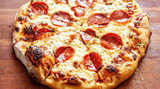

Homemade Pepperoni Pizza

Super crispy, flavorful, and perfect for a quick dinner night snack!
Ingredients:
- Bread Flour
- Granulated sugar
- instant yeast
- Salt
- Warm Water
- Olive oil
- Garlic
- Crushed Red Pepper Flakes
- Crushed Tomatoes with Basil
- Balsamic Vinegar
- Sliced Pepperoni
- Cheese
- Oregano Springs
Step by step:
- At least 20 minutes before you plan on baking your pizza at home, preheat the oven! This gives your oven adequate time to get nice and hot.
- Stretch the dough to fit the size of the pan, then cover again and set aside for 30 minutes.
- In the meantime, you can make the pizza sauce! You can set it aside to slightly cool until you’re ready to use it.
- When you’re ready to bake, spread the pizza sauce on top of the homemade pizza dough. Then top with the cheeses and pepperoni.
- Bake your pizza for 18 to 20 minutes, or until the crust is golden brown and the cheese is bubbling. If it looks like your pizza is getting too brown early on, reduce the oven temperature to 450 degrees.